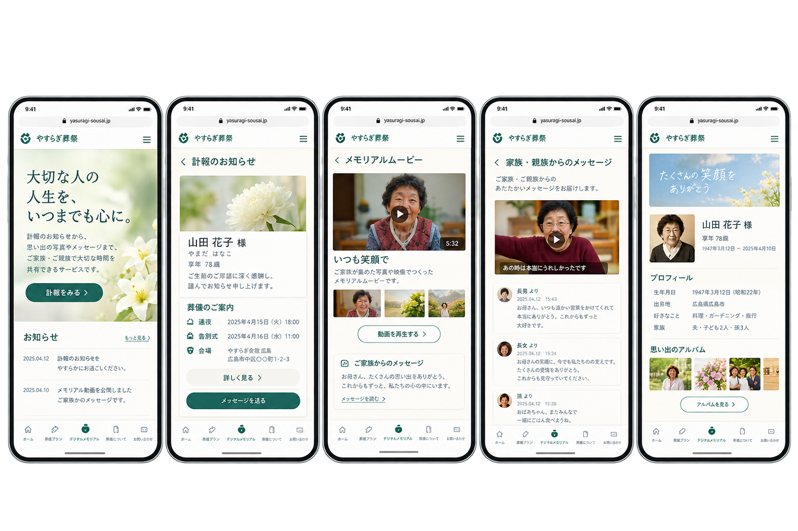
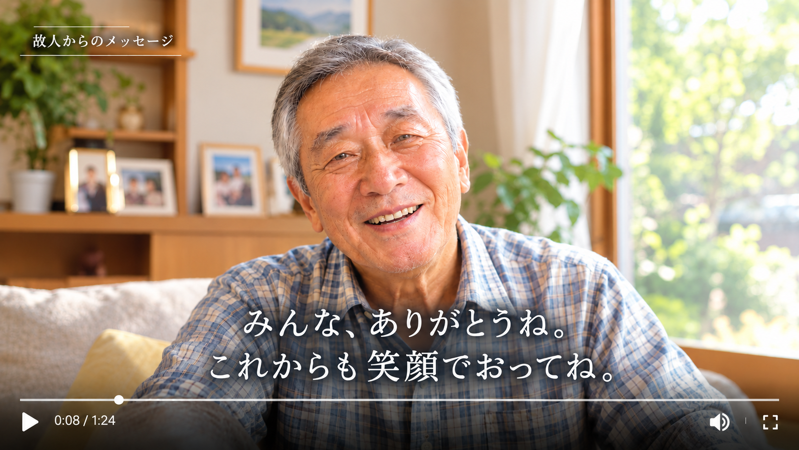

想いを映像で届ける
生前に撮影した映像を通して、 故人からご家族へ感謝の気持ちや 大切な想いを届けることを提案します。
DIGITAL MEMORIAL
離れていても、大切な人の思い出を共有できる。
ABOUT DIGITAL MEMORIAL
元気なうちに撮影した映像を、 大切なご家族やご親族へ残しませんか。
伝えておきたい感謝の気持ちや、これからを生きる大切な人へのメッセージ。
生前に撮影した映像を、亡くなったあとにご家族やご親族が視聴できるように残す、
新しいメモリアルのかたちをご提案します。
また、ご家族やご親族からのメッセージや思い出の写真も残し、 それぞれの想いを大切に共有できる場所を目指します。
FEATURES
生前に託した想いを映像に込めて、
大切なご家族へ届けます。
生前に撮影した映像を通して、 故人からご家族へ感謝の気持ちや 大切な想いを届けることを提案します。
故人との思い出の写真や動画を残し、 届けられた映像とともに、 大切な時間を振り返ることができます。
ご家族や親しい方からのメッセージを添え、 それぞれの想いを共有しながら、 故人を偲ぶ時間を大切にします。
MEMORIAL PAGE

生前に撮影した映像を通して、 故人からご家族へ感謝の気持ちや 大切な想いを届けることを提案します。
映像に添えた思い出の写真やご家族からのメッセージとともに、 大切な人との時間を振り返り、 それぞれの想いを共有できる場所を目指します。
FLOW
生前に託した想いを、大切なご家族へ届けるための仕組みをご提案します。
感謝の気持ちや伝えておきたい想いを、 ご自身の言葉で映像に残します。
映像を届けたい相手や公開のタイミング、 保管方法などを事前に確認し、 本人の意思を大切にする仕組みを想定しています。
本人の事前の意思と定められた条件に基づいて、 ご家族が映像を視聴できる仕組みを目指します。 思い出の写真やご家族からのメッセージも、 あわせて共有できることを想定しています。
FOR DISTANT FAMILY

遠く離れて暮らすご家族にも、
生前に撮影した映像を通して、
故人からの感謝や大切な想いを届ける。
そんな新しいメモリアルのかたちをご提案します。
CONTACT
ご利用方法や掲載内容についてなど、
ご不明な点がございましたらお気軽にお問い合わせください。